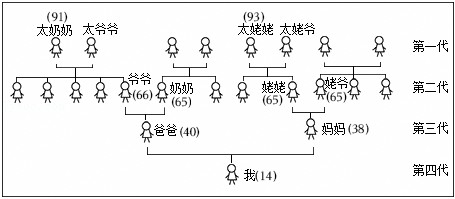
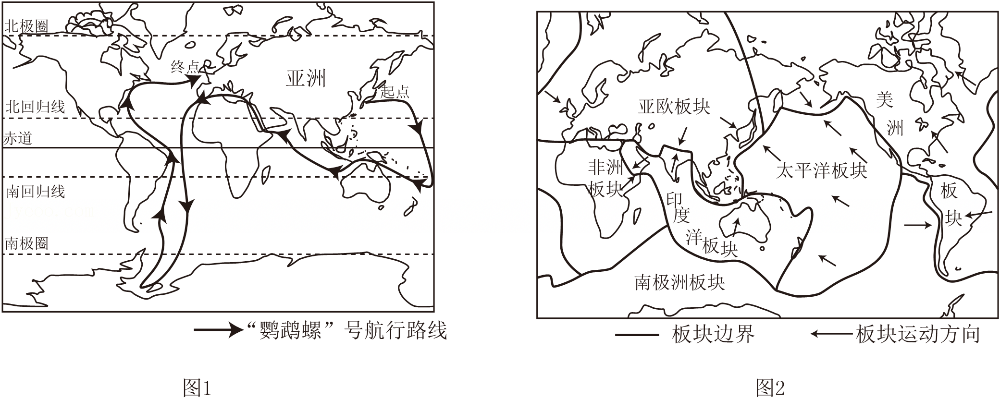
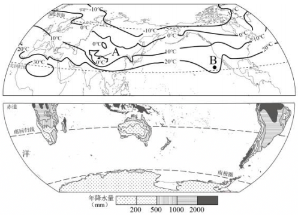
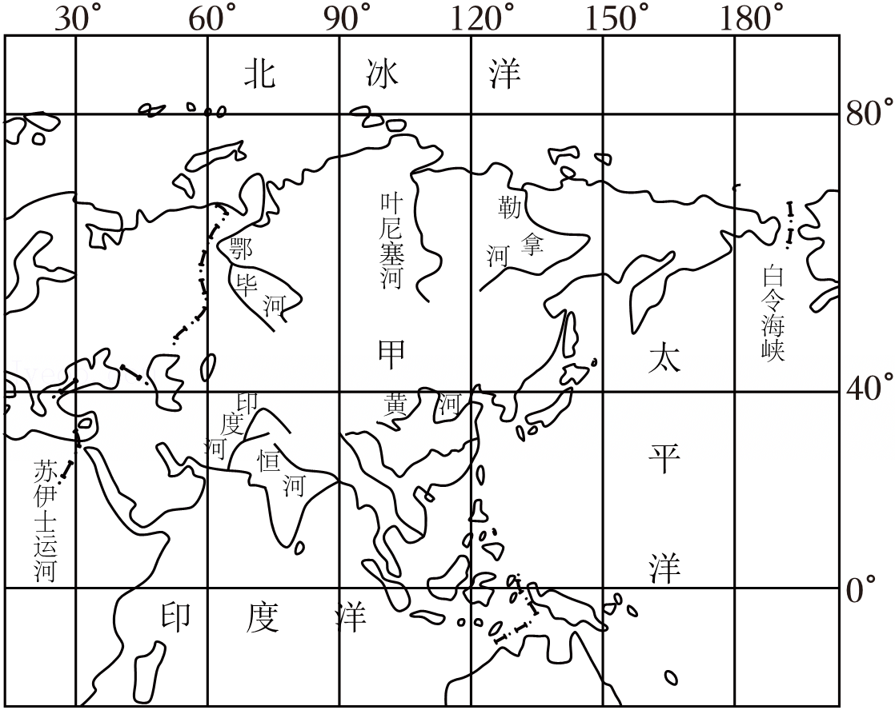

2025年北京市延庆区中考地理试卷 · 选择题 第11、12、13、14、15题
如图为某同学手绘家族人口示意图。读图，完成10～11题。

11．如果运用该示意图探究人口素质变化，建议在图中添加的注记是（ ）
A．文化程度B．性别C．居住地D．出生地
某校兴趣小组的同学，尝试用地理视角解读《海底两万里》。图1为“鹦鹉螺号”航行路线图，图2为六大板块分布示意图。读图，完成第12～13题。

12．“鹦鹉螺”号航行证明地球表面海陆分布的特点是（ ）
A．有连续而广阔的陆地
B．有连续而广阔的海洋
C．陆地相连但海洋不相连
D．海洋主要分布在北半球
13．航行途中，在地中海海域看到了海底火山喷发，该火山位于（ ）
A．位于印度洋板块和太平洋板块交界处
B．位于南极洲板块和印度洋板块交界处
C．位于亚欧板块和非洲板块交界处
D．位于亚欧板块和太平洋板块交界处
如图为北半球年平均气温分布和南半球降水量分布示意图。读图，完成14～15题。

14．气候的两大要素是气温和降水，关于世界气温和降水分布规律的叙述正确的是（ ）
A．世界气温从低纬度向高纬度逐渐降低
B．赤道地区降水少，两极地区降水多
C．同纬度范围内，陆地和海洋的气温均相同
D．回归线附近大陆东岸降水少，大陆西岸多
15．纬度相近的A地和B地的年平均气温不同，产生差异的原因（ ）
A．纬度位置B．海陆位置C．地形D．人为原因
如图为甲大洲河流分布图。读图，完成16～18题。
